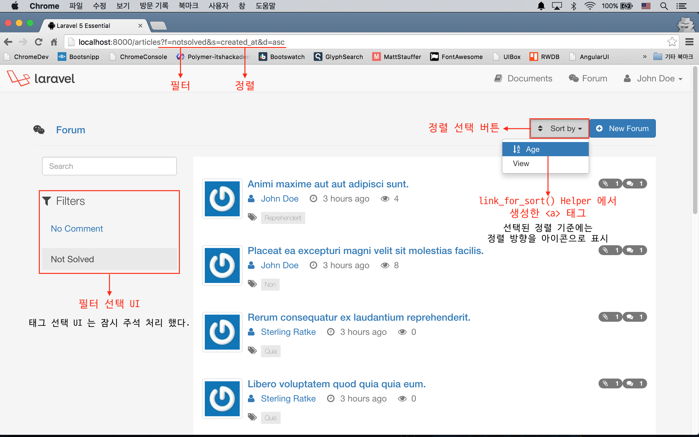
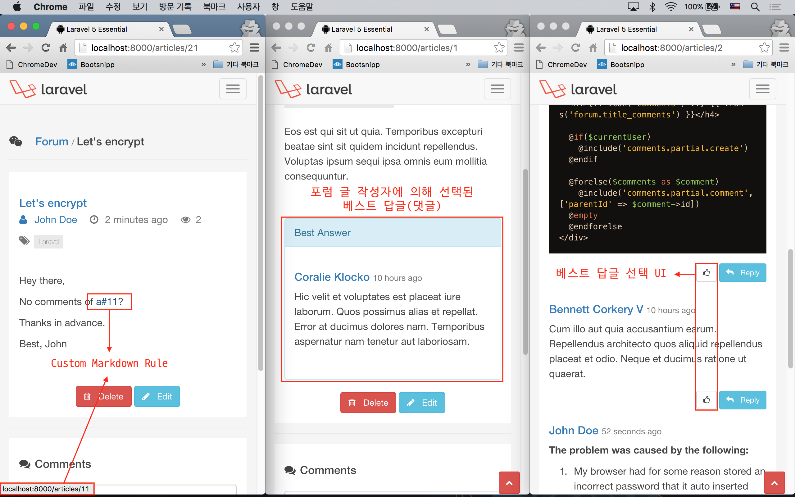

실전 프로젝트 2 - Forum
42강 - 서버 사이드 개선
아직 추가해야 할 기능들이 많지만, 이번 강으로 실전 프로젝트 2편은 마무리하기로 한다. 먼저 무엇을 개선할 지 리스트업하자.
- 포럼에서 필터, 풀텍스트 검색, 정렬 기능을 제공한다.
- 응답 성능 향상을 위해, 서버 사이드 캐싱을 활성화한다.
event:generate코맨드 이용한다. - 포럼에 댓글, 또는 댓글에 대댓글이 달릴 경우, 원본 글 작성자에게 이메일 알림을 발송한다. 이벤트를 수동으로 만들 것이다.
- 서비스 디렉토리를 만들고, 기존 Markdown 컴파일러를 상속하여, 커스텀 컴파일 규칙을 만든다.
- 앞 강에서 누락된 베스트 답글을 선택하고 표시하는 기능을 추가할 것이다.
필터, 풀 텍스트 검색, 정렬 기능
3가지 기능 모두가 ArticlesController::index() 와 관련이 있어 한번에 설명하기로 한다. 주목할 점은 필터를 적용하면 필터가 적용된 포럼 글만 표시된다. 풀 텍스트 검색을 적용하면 검색어에 해당하는 포럼 글만 표시된다. 반면, 정렬은 페이지에 표시할 포럼 콜렉션 자체를 변경하지는 않으며, 필터나 검색에 의해 선택된 포럼 콜렉션의 오름차순, 내림차순 정렬, 즉 Decoration만 하는 역할을 한다는 점을 기억하자.
2가지 필터. 필터 추가는 독자들이 얼마든지 할 수 있을 것이다. URL 쿼리의 필드명은 'f' 로 하자. (e.g. f=nocomment)
nocomment: 댓글이 없는 포럼 글notsolved: 베스트 답글이 없는 포럼 글
2가지 정렬 기준. URL 쿼리에서 's' 는 정렬할 기준 필드, 'd' 는 정렬방향으로 사용자에게 받는 걸로 하자. (e.g. s=created_at&d=asc)
created_at필드에 의한 정렬. Age 라 칭하자.view_count필드에 의한 정렬. View 라 칭하자.
참고 간단해서 설명은 생략했지만, 포럼 상세보기 (ArticlesController::show()) 가 페이지 노출되었을 때 'view_count' 를 올리는 로직을 본 강좌에서 추가하였다.
UI 구현
기존의 'layouts.partial.search' 에 작성했던 검색 폼을 'articles.partial.search' 로 이동하였다. 기존 대비 폼에 action 속성이 추가되었고, 폼 전송을 하면 GET /articles?s=키워드 요청이 발생하며, 이는 ArticlesController::index() 에서 처리된다. 검색 키워드를 담고 폼을 통해 전송되는 필드 이름이 'q' 라는 것을 기억하자.
<!-- resources/views/articles/partial/search.blade.php -->
<form action="{{ route('articles.index') }}" method="get" role="search" id="search__forum">
<input type="text" name="q" value="{{ Request::input('q') }}" class="form-control" placeholder="Search"/>
</form>필터 목록을 표시할 UI를 추가하였다.
<!-- resources/views/tags/partial/index.blade.php -->
<!-- Tags list here ... -->
<p class="lead">
{!! icon('filter') !!} Filters
</p>
<ul class="list-unstyled">
@foreach(['nocomment' => 'No Comment', 'notsolved' => 'Not Solved'] as $filter => $name)
<li class="{{ (Request::input('f') == $filter) ? 'active' : '' }}">
<a href="{{ route('articles.index', ['f' => $filter]) }}">
{{ $name }}
</a>
</li>
@endforeach
</ul>포럼 목록 보기에서 정렬 UI 를 추가하였다.
<!-- resources/views/articles/index.blade.php -->
<div class="btn-group pull-right sort__forum">
<button type="button" class="btn btn-default dropdown-toggle" data-toggle="dropdown">
{!! icon('sort') !!} Sort by <span class="caret"></span>
</button>
<ul class="dropdown-menu" role="menu">
@foreach(['created_at' => 'Age', 'view_count' => 'View'] as $column => $name)
<li class="{{ Request::input('s') == $column ? 'active' : '' }}">{!! link_for_sort($column, $name) !!}</li>
@endforeach
</ul>
</div>위 뷰에서 정렬 링크를 생성하기 위해 link_for_sort() 라는 함수를 추가했는데 본문보다 코드에 설명하는 것이 더 효율적이라 생각되어, 코드 중간중간에 주석을 달았다.
// app/helpers.php
function link_for_sort($column, $text, $params = [])
{
// 현재 요청의 'd' 쿼리 파라미터가 asc 이면, $reverse 에 desc
$direction = Request::input('d');
$reverse = ($direction == 'asc') ? 'desc' : 'asc';
// 정렬을 위한 쿼리 파라미터(s) 의 값이 있으면,
// 오름차순 또는 내림차순 아이콘을 함수의 인자로 넘겨 받은 $text 에 붙인다.
if (Request::input('s') == $column) {
$text = sprintf(
"%s %s",
$direction == 'asc' ? icon('asc') : icon('desc'),
$text
);
}
// 현재 요청의 쿼리 스트링에서 'page', 's', 'd' 등을 제외한 나머지 쿼리 스트링과
// 이 함수의 인자로 넘겨 받은 값들로 생성한 's', 'd' 등의 쿼리 스트링을 합쳐서
// Anchor 태그의 href 속성 값에서 사용할 $queryString 생성한다.
$queryString = http_build_query(array_merge(
Input::except(['page', 's', 'd']),
['s' => $column, 'd' => $reverse],
$params
));
// 현재 요청 URL 을 Request::url() 로 얻어 오고,
// 앞에서 만든 $queryString 문자열을 합쳐서 완전한 HTML <a> 태그를 생성한다.
return sprintf(
'<a href="%s?%s">%s</a>',
urldecode(Request::url()),
$queryString,
$text
);
} 위 함수에서 선택된 정렬 링크를 한번 더 선택하면, 오름차순, 내림차순 간에 토글된다. 물론, 아이콘도 같이 변경된다.
마이그레이션
MySql 공식 문서를 이용하여 MySql 네이티브 풀텍스트 검색을 구현하기로 한다. 이를 위해 기존 마이그레이션을 약간 수정해야 한다.
// database/migrations/create_articles_table.php
class CreateArticlesTable extends Migration
{
public function up()
{
Schema::create('articles', function (Blueprint $table) { // ... });
DB::statement('ALTER TABLE articles ADD FULLTEXT search(title, content)');
}
// ...
}마이그레이션을 실행한다.
$ php artisan migrate:refresh --seed컨트롤러 구현
index() 메소드 안에 필터, 검색, 정렬 로직을 넣으면 길어져서 filter() 란 메소드로 빼내었다. 이번에도 코드에서 주석으로 설명한다.
참고 라라벨 커뮤니티에서는 비즈니스 로직과 데이터 소스를 디커플링시키고, 코드의 재활용성을 높이기 위해서 Repository Pattern 을 많이 사용한다. filter() 메소드와 같은 내용들은 Repository 로 옮겨져서 다른 클래서에서도 사용할 수 있도록 하면 좋을 것이다.
// app/Http/Controllers/ArticlesController.php
class ArticlesController extends Controller
{
public function index(FilterArticlesRequest $request, $id = null)
{
$query = $id
? Tag::findOrFail($id)->articles()
: new Article;
$query = $query->with('comments', 'author', 'tags', 'solution', 'attachments');
$articles = $this->filter($request, $query)->paginate(10);
return view('articles.index', compact('articles'));
}
protected function filter($request, $query)
{
if ($filter = $request->input('f')) {
// 'f' 쿼리 스트링 필드가 있으면, 그 값에 따라 쿼리를 분기한다.
switch ($filter) {
case 'nocomment':
$query->noComment();
break;
case 'notsolved':
$query->notSolved();
break;
}
}
if ($keyword = $request->input('q')) {
// 이번에도 'q' 필드가 있으면 풀텍스트 검색 쿼리를 추가한다.
$raw = 'MATCH(title,content) AGAINST(? IN BOOLEAN MODE)';
$query->whereRaw($raw, [$keyword]);
}
// 's' 필드가 있으면 사용하고, 없으면 created_at 을 기본값으로 사용한다.
$sort = $request->input('s', 'created_at');
// 'd' 필드가 있으면 사용하고, 없으면 desc 를 기본값으로 사용한다.
$direction = $request->input('d', 'desc');
return $query->orderBy($sort, $direction);
}
// Other codes ...
}컨트롤러 구현 중에 좀 더 가독성 높은 쿼리를 위해, Article 모델에 아래 2개의 쿼리스코프를 추가하였다.
// app/Article.php
class Article extends Model
{
public function scopeNoComment($query)
{
return $query->has('comments', '<', 1);
}
public function scopeNotSolved($query)
{
return $query->whereNull('solution_id');
}
}ArticlesController::index() 에서 FilterArticlesRequest 란 Form Request 를 받는다. 이는 브라우저의 주소표시줄을 통해 사용자의 눈에도 보이는 HTTP GET 쿼리 스트링을 통해서, 'f', 's', 'd' 등의 필드 값이 전달되기 때문에, 서비스에서 허용하지 않는 문자열이 들어오는 것을 막기 위한 조치이다.
// app/Http/Requests/FilterArticlesRequest.php
class FilterArticlesRequest extends Request
{
public function rules()
{
return [
'f' => 'in:nocomment,notsolved', // filter
's' => 'in:created_at,view_count', // Sort: Age(created_at), View(view_count)
'd' => 'in:asc,desc', // Direction: Ascending or Descending
'q' => 'alpha_dash', // Search query
];
}
}컨트롤러 코드에서 풀텍스트 검색을 위해 whereRaw() 란 날 SQL을 쓸 수 있는 메소드를 이용하였고, 특수한 MySql 쿼리를 이용하였다. 쿼리는 앞서 언급한 MySql 공식 문서를 참고하였다.
참고 여기서는 MySql 네이티브 풀텍스트 검색을 이용했지만, 데이터베이스 엔진의 의존성을 버리고 빠른 성능을 달성하기 위해서는 Elastic Search 등을 검토해 보기 바란다.

캐시
동작 원리
아래와 같은 원리로 동작할 것이다. () 안에 포함된 내용은 'file', 'database' 캐시에는 적용되지 않는다.
ArticlesController::index()에서 Article 모델의 콜렉션을 캐시에 ('xxx' 라는 태그로) 저장한다.- 신규 Article 모델의 생성, 기존 모델의 수정 또는 삭제시 이벤트를 던져 ('xxx' 태그를 가진) 캐시를 삭제한다.
도우미 패키지 설치
라라벨의 캐시 기능을 좀 더 편리하게 사용하기 위해서 watson/rememberable 패키지를 가져와서 사용할 것이다. 라라벨 4 버전에 있다가 5 버전에서 빠진 기능이다.
$ composer require watson/rememberable이 패키지는 Watson\Rememberable\Rememberable 이란 Trait를 제공하는데, Model 에서 use 키워드로 활성화시켜 주면, remember(\DateTime|int $minutes) 란 메소드에 접근할 수 있다. 모든 모델에서 앞서 언급한 Trait 를 써주는 것은 피곤하기도 하거니와, 코드 구조화 측면에서 추상 모델 클래스 (abstract Model) 를 하나 만들고, 우리 프로젝트의 모델들은 이 추상 모델을 상속 받도록 하자. 이 추상 모델은 Eloquent 를 상속 받을 것이다.
// app/Mode.php
<?php
namespace App;
use Illuminate\Database\Eloquent\Model as Eloquent;
use Watson\Rememberable\Rememberable;
abstract class Model extends Eloquent
{
use Rememberable;
}원래 'Article.php' 에 있던 use Illuminate\Database\Eloquent\Model 선언이 'Model.php' 로 이동한 것을 확인하자.
// app/Article.php
<?php
namespace App;
class Article extends Model { // ... }컨트롤러에서 캐시 기능 활성화
remember() 메소드는 분 단위로 지정된 캐시의 수명을 인자로 받게 되어 있다. 5분이라고 지정했다.
with() 메소드 바로 뒤에 remember() 메소드를 체인했는데, 이는 Eager Loading 된 관계를 포함하여 모든 Article 콜렉션을 캐시에 저장한다는 의미이다.
캐시 태그 는 캐시 키에 대한 별칭이라고 볼 수 있다. 가령, 'dogs' 란 캐시 키를 지정하고, 'animals' 란 캐시 태그를 지정한 후, 'animals' 태그에 속하는 모든 캐시를 한방에 지울 수 있다. 주의할 점은 remember() 메소드와 결합되었을 때는 tags() 메소드 대신 cacheTags(string|array $cacheTags) 를 사용하여야 한다는 점이다.
캐시 태그 를 쓸 때 또 하나 주의할 점은, 'file', 'database' 캐시 드라이버에서는 태그를 쓸 수 없다는 점이다. 아래 코드에서 taggable() Helper 가 태그 사용 가능성을 체크해 준다.
// app/Http/Controllers/ArticlesController.php
class ArticlesController extends Controller
{
public function index(FilterArticlesRequest $request, $id = null)
{
$query = $id
? Tag::findOrFail($id)->articles()
: new Article;
$query = taggable()
? $query->with('comments', 'author', 'tags', 'attachments')->remember(5)->cacheTags('articles')
: $query->with('comments', 'author', 'tags', 'solution', 'attachments')->remember(5);
// ...
}
}앞서 언급한 taggable() Helper 는 'config/cache.php' 를 읽어 와서, default 드라이버가 'file' 또는 'database' 인지를 체크한다.
// app/helpers.php
function taggable()
{
return !in_array(config('cache.default'), ['file', 'database']);
}캐시 삭제 이벤트
모델에 변경 사항이 있을 때 이벤트를 던져, 지정된 태그의 캐시만 비울 것이다. 앞서 설명했듯이, 캐시 태그 기능은 'file', 'database' 캐시 드라이버에서 지원되지 않으므로, 캐시 전체를 비우는 식으로 구현할 것이다.
모델에 변경이 발생하는 store(), update(), destroy() 메소드에서 각각 이벤트를 던져야 한다. ModelChanged 라고 이름 지었고, 이벤트 데이터로 지워야 할 태그의 리스트를 전달하였다.
// app/Http/Controllers/ArticlesController.php
class ArticlesController extends Controller
{
public function store(ArticlesRequest $request)
{
// ...
event(new ModelChanged(['articles', 'tags']));
}
// ...
}22강 - 이벤트 에서 배운 내용과는 다른 방법을 이용할 것이다.
이벤트 이름과, 리스너 이름을 먼저 정한다. 이벤트 이름은 앞서 컨트롤러에서 ModelChanged 로 정했고, 리스너는 CacheHandler 로 정했다.
// app/Prividers/EventServiceProvider.php
class EventServiceProvider extends ServiceProvider
{
protected $listen = [
\App\Events\ModelChanged::class => [
\App\Listeners\CacheHandler::class
],
];
// ...
}artisal CLI 로 이벤트 클래스와 리스너 클래스를 만든다. 'app/Events/ModelChanged.php' 와 'app/Listeners/CacheHandler.php' 파일이 만들어 진 것을 확인하자.
$ php artisan event:generate이벤트 클래스는 단순한 DTO (== Data Transfer Object) 로 클래스간 데이터를 주고 받기 위한 매개체이다. 해서, DTO의 클래스 변수들은 모두 public 으로 주어야 한다는 것을 주의하자.
// app/Events/ModelChanged.php
<?php
namespace App\Events;
use Illuminate\Queue\SerializesModels;
class ModelChanged extends Event
{
use SerializesModels;
public $cacheTags;
public function __construct($cacheTags)
{
$this->cacheTags = $cacheTags;
}
}리스너도 별 것 없다. EventServiceProvider 의 $listen 속성에서 이벤트에 연결된 리스너의 handle() 메소드를 기본적으로 호출하게 되어있고, 이 메소드에는 이벤트 객체를 인자로 넘겨 주게 되어 있다.
ModelChanged 객체를 넘겨 받았으므로, 위헤서 정의한 $cacheTags 변수에 쉽게 접근할 수 있다. taggable() Helper 로 태그 기능이 없으면, 캐시 전체를 삭제하고 Early Return 을 하도록 하자.
// app/Listeners/CacheHandler.php
<?php
namespace App\Listeners;
use App\Events\ModelChanged;
class CacheHandler
{
public function handle(ModelChanged $event)
{
if (! taggable()) {
// Remove all cache store
return \Cache::flush();
}
// Remove only cache that has the given tag(s)
return \Cache::tags($event->cacheTags)->flush();
}
}
참고memcached 사용 관련... 필자의 경우, memcache 사용을 위하여 'memcached(system library)', 'php-memcached(php module)' 을 모두 설치해 주어야 했다. memcached 를 사용하려면 .env.php 에서 CACHE_DRIVER=memcached 로 수정하고, 아래 설치 및 실행 명령을 참고하자.
# Linux
$ sudo apt-get install memcached php5-memcached
# Mac OS
$ brew install memcached homebrew/php/php5x-memcached
# Run as daemon mode
$ memcached -u memcached -d -m 30 -l 127.0.0.1 -p 11211완전 잡담 가령, Article::with('...')->where('...')->get() 쿼리를 할 때, with() 가 붙는 순간 Illuminate\Database\Eloquent\Builder 인스턴스로 변하고, get() 으로 최종 결과값을 가져오면 Illuminate\Database\Eloquent\Collection 인스턴스가 된다.
이메일 알림
별로 어렵지 않은데, 앞 전의 이벤트와 약간 다른 방식으로 이벤트와 핸들러를 등록할 것이다.
// app/Providers/EventServiceProvider.php
class EventServiceProvider extends ServiceProvider
{
// ...
public function boot(DispatcherContract $events)
{
parent::boot($events);
$events->listen('comments.*', \App\Listeners\CommentsHandler::class);
}
} 22강 - 이벤트 에서 배운 내용과 유사하다. 다만, listen() 메소드를 쓴 위치만, 글로벌 routes.php 에서 위 파일로 옮겨졌을 뿐이다. 'comments.*' 는 예상한대로, 'comments.' 로 시작하는 모든 이벤트를 \App\Listeners\CommentsHandler::handle() 로 연결시키겠다는 의미이다.
아래는 이벤트 핸들러 구현인데, 이메일을 보내는 일반적인 구현이다. 특이할만한 점은 $comment->commentable() 메소드를 이용하여 Comment 에 연결된 Article 객체를 가져와서 author->email 을 접근했다는 부분과, Comment 자신의 부모 Comment 의 author->email 도 같이 가져와서, 수신자에서 중복을 제거하고 메일을 발송하고 있다는 점이다.
'emails.new-comment' 뷰는 설명을 생략한다.
// app/Listeners/CommentsHandler.php
<?php
namespace App\Listeners;
use App\Comment;
class CommentsHandler
{
public function handle(Comment $comment)
{
$to[] = $comment->commentable->author->email;
if ($comment->parent) {
$to[] = $comment->parent->author->email;
}
$to = array_unique($to);
$subject = 'New comment';
return \Mail::send('emails.new-comment', compact('comment'), function($m) use($to, $subject) {
$m->to($to)->subject($subject);
});
}
}Markdown 컴파일러 확장
25강 - 컴포저 에서 가져온 ParsedownExtra 클래스를 이용하여, 사용자가 마크다운으로 작성한 포럼 글을 다시 보여줄 때 잘 사용하고 있었다.
그런데, 갑자기 새로운 요구사항이 생겼다고 가정하자. 'a#포럼글id' 또는 'article#포럼글id' 식으로 마크다운 본문을 쓰면, 자동으로 해당 id로 이동하는 링크를 제공해야 한다고 하자.
먼저, ParsedownExtra 상속받아 이 프로젝트만의 Markdown 클래스를 만들고, 여기에 해당 로직을 녹여 넣도록 하자. preg_*() 함수는 PHP 내장함수로 사용법에 대한 설명은 공식 문서를 참고하기 바란다. 다만, public function text($text) 의 마지막 줄 return parent::text($text); 에서 넘겨 받은 raw 문자열에서 필요한 컴파일 작업을 먼저 수행하여 얻은 결과물을 부모 클래스로 넘겨 데코레이션한 부분은 눈여겨 볼만하다.
// app/Services/Markdown.php
<?php
namespace App\Services;
use ParsedownExtra;
class Markdown extends ParsedownExtra {
const PATTERN_ARTICLE = '/(article|a)\#(?P<id>\d+)/i';
public function text($text) {
if (preg_match(self::PATTERN_ARTICLE, $text, $matches) > 0) {
$text = preg_replace_callback(self::PATTERN_ARTICLE, function ($matches) {
return sprintf(
"<a href='%s'>%s</a>",
route('articles.show', $matches['id']),
$matches[0]
);
}, $text);
}
return parent::text($text);
}
}베스트 답글 선택 구현
UI 구성
포럼 상세 보기 본문에 베스트 답글(== 댓글)이 있으면, 표시하도록 하였다.
또, 댓글 뷰를 @include 할 때, $solved, $owner 란 새로운 변수도 넘겨 주도록 하였다.
<!-- resources/views/articles/show.blade.php -->
<div class="col-md-9">
<article id="article__article" data-id="{{ $article->id }}">
<!-- ... -->
@if ($article->solution)
@include('comments.partial.best', ['comment' => $article->solution])
@endif
<!-- ... -->
<article>
@include('comments.index', [
'solved' => $article->solution,
'owner' => $currentUser && $article->isAuthor()
])
</article>
</div>'comments.partial.best' 뷰는 특별한 내용이 없으므로 생략한다.
포럼 글에 대해서 베스트 댓글이 없으면, 포럼 글 작성자가 베스트를 선택할 수 있도록 UI를 제공해야 한다. 'articles.show' 뷰에서 넘겨 받은, $solved, $owner 변수를 활용하고 있는 것을 확인할 수 있다.
아래에서 란 블레이드 문법에 주목하자. 이는 부모 뷰에 동일한 이름의 @section 정의가 있으면, 둘을 합쳐서 @yield 할 수 있게 해 준다. 가령, 'comments.partial.commnet' 뷰에 @section('script') 가 있고, 부모 뷰인 'comments.index' 에도 @section('script') 가 있다면, 키워드를 포함하지 않으면, 일반적인 클래스 상속과 동일하게 자식뷰의 섹션이 부모뷰를 오버라이드해 버린다.
<!-- resources/views/comments/partial/comment.blade.php -->
@if ($currentUser)
<p class="text-right" style="margin-top: 1rem;">
@if (! $solved && $owner)
<button type="button" class="btn btn-default btn-sm btn__pick" title="Pick as the Best Answer">
{!! icon('pick', false) !!}
</button>
@endif
<!-- Reply button here ... -->
</p>
@endif
@section('script')
<script>
// Other javascript codes ...
$("button.btn__pick").on("click", function(e) {
var articleId = $("#article__article").data("id"),
commentId = $(this).closest(".media__item").data("id");
if (confirm("Are you sure to select this comment as the 'Best'?")) {
$.ajax({
type: "POST",
url: "/articles/" + articleId + "/pick",
data: {
_method: "PUT",
solution_id: commentId
}
}).success(function() {
flash('success', 'Updated ! The page will reload in 3 secs.', 2500);
reload(3000);
});
}
});
</script>
@stop
그 외 추가된 장식들
- 22강 - 이벤트 에서 썼던 users.last_login 필드를 살려서, 사용자가 로그인할 때마다 시각을 업데이트하였다. (database/migrations/create_users_table.php, app/Http/Controllers/SessionsController.php, app/Providers/EventServiceProvider.php, app/Listeners/UserEventsHandler.php)
- 포럼 상세 보기 페이지가 로드될 때마다 articles.view_count 값을 올려 조회수를 표시하는 기능을 추가하였다. (database/migrations/create_articles_table.php, app/Providers/EventServiceProvider.php, app/Listeners/ViewCountHandler.php, resources/views/articles/partial/article.blade.php)